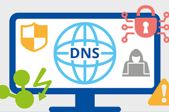
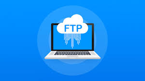

HTTP é a sigla para Hypertext Transfer Protocol, ou Protocolo de Transferência de Hipertexto. Esse é o principal protocolo responsável pela transferência de dados na Internet, criando as bases necessárias para a conexão entre um cliente e um servidor.
HTTPS é uma versão mais segura ou uma extensão do HTTP. No HTTPS, o navegador e o servidor estabelecem uma conexão segura e criptografada antes de transferir dados.
DNS (Domain Name System – Sistema de nome de domínio) converte nomes de domínio legíveis por humanos (por exemplo, www.amazon.com) em endereços IP legíveis por máquina (por exemplo, 192.0.2.44).
O FTP (File Transfer Protocol) ou Protocolo de Transferência de Arquivos, em português, é um protocolo usado para transferir arquivos por uma rede de computadores, desde uma local à internet. Basicamente, permite a troca de arquivos entre dois computadores de modo direto, em que um ganha acesso às pastas do outro.
O que é DHCP? DHCP ou Dynamic Host Configuration Protocol é um protocolo ou serviço do padrão TCP/IP utilizado em rede de computadores que atribui um endereço IP (Internet Protocol) de forma automática a qualquer dispositivo conectado.
SSH é a sigla para Secure Socket Shell, sendo um dos protocolos específicos de segurança de troca de arquivos entre cliente e servidor de internet, usando criptografia. O objetivo do SSH é permitir que desenvolvedores ou outros usuários realizem alterações em sites e servidores utilizando uma conexão simples e segura.